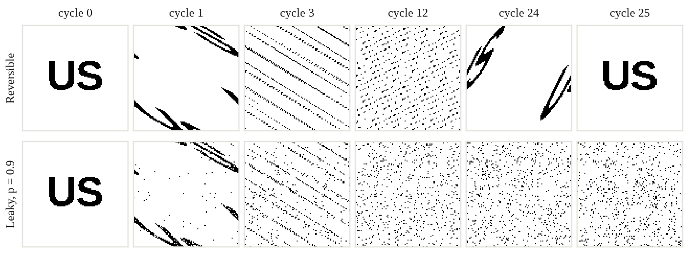
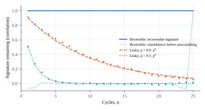

Seeds, Cycles and the Persistence of Information
SNVRKOTICS LLC · snvrk@snvrkotics.com
We examine a four-part thesis about the universe. (1) It began from a seed, an initial state that fixes everything that follows. (2) Whoever knew the seed could predict everything. (3) Free will is therefore an illusion. (4) The universe runs in cycles, each ending as black holes turn into white holes, and every trace of what happened in one cycle is folded into the seed of the next, so that each signature lasts for the entire time of the universe, like the small portion of each batch of candy said to go into the next. We state each claim precisely and test it against established physics, then derive what would have to be true for it to hold. Claim 1 is a live option: deterministic readings of quantum mechanics exist, though standard quantum mechanics is not deterministic. Claim 2 fails for any predictor inside the universe. Because of chaos, a seed known to d digits predicts only about d·ln 10/λ steps ahead. Predicting one year of the universe at the level of its particles would require more bits than the universe can hold. Claim 3 follows for libertarian free will if Claim 1 holds, but not for the compatibilist kind. And because no one inside the universe can compute a choice faster than the chooser does, deliberation remains the only process by which outcomes get decided. For Claim 4 we prove a consistency result. Endless cycles, entropy carried across cycles, and signatures that last forever are compatible only if the cycle-to-cycle map preserves information exactly (unitarity) and the entropy that is carried over or reset is coarse-grained. If any fraction of the seed is replaced each cycle, a signature decays as pn after n cycles: never quite zero, but soon negligible. A reversible toy universe shows the alternative: a signature scrambled beyond recognition, fully recoverable at every cycle, and returning exactly by recurrence. Unitarity is also what most physicists now expect of black holes. The thesis therefore survives in a sharp form, as a claim that the universe’s dynamics lose no information, and we list observations that could refute its cosmological parts.
Keywords: determinism; predictability; chaos; free will; cyclic cosmology; black holes; white holes; unitarity; information; entropy; Poincaré recurrence
Every number in the companion paper on “every X minutes” claims [1] was produced by a simulation started from a single integer, 20261003. Anyone who runs the code with that seed obtains the same tables to the last digit. In that sense the seed contains them all. And yet nobody, the author included, knew those numbers until the code had run. The seed determined them; it did not reveal them.
This paper takes that gap between determining and revealing as its starting point, and applies it to a thesis about the whole universe:
Versions of each claim have long histories: Laplace’s demon for T1–T2 [2], hard determinism for T3 [12], and oscillating and cyclic cosmologies for T4 [18–25]. Our aim is not to endorse or dismiss the thesis but to make it precise enough to be wrong. Section 2 separates determinism from predictability. Section 3 asks what follows for free will. Section 4 reviews how a universe could cycle and what limits entropy places on cycling. Section 5 introduces a model of carry-over between cycles, proves when a signature can last forever, and illustrates the answer with a toy universe. Section 6 lists observations that could refute the cosmological parts. Section 7 gives a verdict on each claim.
Write the state of the universe at time t as x(t) and its laws as a flow Φt, so that x(t) = Φt(s), where s = x(0) is the seed. T1 says that such a Φ exists and is single-valued. T2 says, further, that someone could evaluate Φt(s) before time t arrives. Laplace stated both in one sentence [2]: an intellect that knew all forces and all positions “would embrace in the same formula the movements of the greatest bodies of the universe and those of the lightest atom; for it, nothing would be uncertain.” A pseudorandom number generator is a working model. Its entire output is a fixed function of the seed, yet the output looks random to anyone who does not hold the seed, and computing it means running the generator.
Classical mechanics is deterministic, and so is general relativity for globally hyperbolic spacetimes. Quantum mechanics, in its standard formulation, is not: measurement outcomes are random with probabilities given by the Born rule. Bell’s theorem shows that no local theory of predetermined outcomes reproduces quantum correlations [3]. Still, three readings of quantum mechanics are fully deterministic, and each gives T1 a different form. In Everett’s interpretation, the universal wavefunction evolves unitarily and deterministically from its initial state, which is the seed [4]. Every outcome occurs on some branch, but an observer cannot predict which branch they will find themselves on. In Bohmian mechanics, particle positions follow deterministic trajectories, but their initial values can be known only up to the |ψ|2 distribution, which makes the uncertainty absolute rather than practical [5]. In superdeterministic models, including ’t Hooft’s cellular-automaton interpretation [6], even the choice of what to measure is fixed by the initial state, so Bell’s theorem does not apply. Superdeterminism is the version closest to T1 as stated, and also the most contested. Our verdict is that T1 is a coherent and live option, but it is not established. It requires one of these interpretations, and current experiments do not distinguish among them.
Grant T1. T2 still fails, for three independent reasons.
Proposition 1 (precision horizon). In a system whose largest Lyapunov exponent is λ > 0, keeping a forecast within tolerance δ for time t requires knowing the seed to within ε ≲ δe−λt, that is, about λt/ln 2 bits per unstable direction beyond the tolerance. A seed known to d decimal digits supports forecasts of about d ln 10/λ time units.
Table 1 checks Proposition 1 on Arnold’s cat map [7], the simplest chaotic system, for which λ = ln[(3 + √5)/2] = 0.962. Each additional digit of the seed buys about 2.4 more steps. Fifteen digits, the precision of ordinary floating-point arithmetic, buy 34. Real matter is far more sensitive. By Berry’s estimate, the gravitational pull of a single electron at the edge of the observable universe is enough to make the motion of gas molecules unpredictable after a few dozen collisions [8]. Chaos in the weather limits forecasts in the same way [9].
| Seed precision (decimal digits) | 3 | 6 | 9 | 12 | 15 |
|---|---|---|---|---|---|
| Steps until the forecast fails (simulated) | 6 | 13 | 20 | 27 | 34 |
| d ln 10/λ (Proposition 1) | 4.8 | 12.0 | 19.1 | 26.3 | 33.5 |
Table 1. The precision horizon of the cat map. A forecast fails when its error exceeds 0.1 on the unit torus. Two seeds differing by 10−d diverge after about 2.4d steps.
Capacity. The observable universe can have performed at most about 10120 elementary operations on at most about 1090 bits since the Big Bang [10]. A molecule in a gas collides some 1010 times a second, and each collision costs a few bits of initial precision. Predicting a single year for the universe’s roughly 1080 particles would therefore require a seed specified to something like 1097 bits or more, far beyond what the universe can store. The demon would have to be bigger than the universe.
Self-reference. A predictor that is part of the universe must also predict itself, including the effect of announcing its own prediction. Wolpert proved that no physical inference device can correctly predict every other such device, or every fact about the universe that contains it [11]. This is a diagonal argument of the same kind as the halting problem.
So T2 holds only for an observer outside the universe with infinite precision and unlimited memory. For anyone inside it, the future is determined but not computable faster than it happens. The universe is its own fastest simulation.
If T1 holds, every choice was fixed by the seed. Van Inwagen’s consequence argument puts the libertarian worry exactly: if our acts are consequences of the laws of nature and events in the remote past, and neither is up to us, then our acts are not up to us either [12]. In that sense T3 follows from T1. Libertarian free will, the ability to have done otherwise with the past and the laws held fixed, is an illusion in a deterministic universe.
Two qualifications keep T3 from proving more than it does. First, indeterminism does not rescue libertarian freedom: a choice settled by a quantum coin toss is no more “up to me” than one settled by the seed. The free will theorem of Conway and Kochen shows that if experimenters’ choices are not determined by the past, particle responses are not either [13]. It ties the two kinds of freedom together without showing that either exists. Second, compatibilists define free will as acting on one’s own reasons, with the right relation between one’s desires and one’s actions, and on that definition free will is untouched by determinism [14, 15]. Neuroscience has not settled the matter. The readiness potential once taken to show that the brain decides before we are aware [16] is now widely read as accumulated neural noise rather than a hidden decision [17].
Section 2 adds something to this old debate. Because no one inside the universe can compute a choice faster than the chooser makes it, deliberation is not idle. It is the process by which the seed’s consequences actually get worked out. In the language of the opening example, the seed fixes the output, but the output does not exist until the generator runs, and a person deliberating is the generator running. The defensible form of T3 is this: the choice is determined, and you are the computation that determines it. What is illusory is the sense that the past could have been followed by a different choice. What is not illusory is that the choice is made by you, and that nobody could have known it before you made it.
Cyclic cosmologies come in two families. In global models the whole universe ends and restarts. Tolman’s oscillating universe recollapses and re-expands [18, 19]; the ekpyrotic cyclic model of Steinhardt and Turok uses collisions between branes [20]; Baum and Frampton’s model discards most of space at each turnaround [21]; and Penrose’s conformal cyclic cosmology joins the infinitely expanded end of one aeon to the Big Bang of the next [22]. In local models the cycle runs through black holes. Black holes may tunnel into white holes [23]; a black hole’s interior may bounce into a new expanding universe, as in Einstein–Cartan cosmology with torsion [24]; and in Smolin’s cosmological natural selection, each black hole spawns a universe whose constants are those of its parent, slightly changed [25].
T4’s mechanism, black holes collapsing into white holes, belongs to the local family, and that has a consequence the thesis should take on board. A universe with many black holes produces many successors, so history is a branching tree rather than a single line of cycles. Smolin’s picture is the closest existing theory to the tootsie-roll intuition: each offspring universe carries a small, slightly mutated inheritance from its parent. But there are many offspring, and “the next seed” is one of a great many.
The universe is 13.8 billion years old [26]. If dark energy is a cosmological constant, it will expand forever and never recollapse, and global cycles are ruled out unless, as in Penrose’s scheme, the end is redefined. Recent baryon-acoustic-oscillation measurements from DESI prefer dark energy that weakens with time, at a significance of 2.8–4.2σ depending on the data combined [27]. If that holds, a recollapse becomes possible, and one fit estimates a total lifespan of about 33 billion years [28]. T4’s figure of 110 billion years has no derivation behind it. We therefore treat the cycle length Tc as a free parameter. On T4’s value, we are about an eighth of the way through the present cycle.
Entropy grows within each cycle. Tolman noticed that if it also carries over, each cycle starts with more entropy than the last, so cycles grow longer and the sequence cannot be truly periodic [19]. A simple recursion makes the constraint explicit.
Proposition 2 (entropy across cycles). Let Sn be the entropy at the start of cycle n, suppose each cycle produces entropy a > 0, and let a fraction p of the entropy carry over: Sn+1 = pSn + a. If p < 1, Sn → a/(1 − p) and the cycles approach a steady state. If p = 1, Sn = S0 + na grows without bound.
Every cyclic model that repeats forever therefore discards entropy somewhere. Baum and Frampton discard almost all of space [21]; Penrose discards mass and with it the scale against which entropy is counted [22]. T4 says that entropy carries over and that cycles repeat forever. By Proposition 2 the two can coexist only if the carry-over is partial, and Section 5 shows that partial carry-over means signatures fade. The way out, developed next, is that the entropy that must be shed and the information that must be kept are not the same thing.
Let sn be the seed of cycle n, and let the seed of the next cycle be produced by a map that may lose information: sn+1 = F(sn, ξn), where ξn is fresh material not determined by sn. A signature is anything written into s0, and it survives to cycle n to the extent that sn still carries information about s0. We measure that with the mutual information I(s0; sn). The tootsie-roll map keeps each part of the seed with probability p, passing it through a reversible scramble, and replaces it with fresh material otherwise.
Proposition 3 (persistence of a signature). (a) If F is invertible and uses no fresh material, as unitary evolution does, then I(s0; sn) = H(s0) for every n: the signature lasts for the entire time of the universe. (b) Under the tootsie-roll map with carry-over p, applied independently to each part, I(s0; sn) = pnH(s0) when the fresh material is independent of the signature. (c) More generally, if each cycle is a noisy channel with strong data-processing constant η < 1, then I(s0; sn) ≤ ηnH(s0).
Part (b) captures the tootsie-roll intuition exactly. A signature never vanishes, since pn > 0 for every n, but it halves every ln 2/ln(1/p) cycles. With 10% carry-over, a signature retains 10−10 of its information after ten cycles. “Never forgotten” in the literal sense of “not exactly zero” is true of any leaky universe. “Lasts the entire time,” in the sense of remaining recoverable, is true only of case (a).
Figure 1 runs both cases on a 101 × 101 grid. The signature “US” is written into the seed. Each cycle applies Arnold’s cat map, (x, y) ↦ (2x + y, x + y) mod 101, which is a bijection of the grid and so loses nothing [7]. In the leaky version, each cell is also replaced with probability 1 − p by fresh material of the same average density.

Two different questions can be asked of the signature, and Figure 2 separates them. Does cycle n resemble the seed? In the reversible universe, almost never: the correlation between the scrambled grid and the original stays within ±0.07 from the second cycle to the twenty-fourth. Is the signature recoverable from cycle n? In the reversible universe, always: undoing the map returns the seed exactly, at every cycle. In the leaky universe, the recoverable signature follows pn, as Proposition 3(b) predicts (0.91, 0.82, 0.74 for the first three cycles at p = 0.9, against 0.90, 0.81, 0.73). The intuition that “we just get folded into the new seed” is precisely the first case: folded so thoroughly that nothing looks the same, yet nothing is lost.

The toy universe also returns exactly to its seed, after 25 cycles. This is Poincaré recurrence [29], which holds for any reversible system with finitely many states. For the real universe the recurrence time is of order eS, and with an entropy of about 10104 kB for the observable universe [30], that is incomparably longer than any 110-billion-year cycle. So cycles of T4’s length are not repeats. Each is new, though each contains, scrambled, everything that came before.
Theorem 1 (consistency of T4). The three parts of T4 (cycles that repeat forever, entropy that carries over, and signatures that last for the entire time of the universe) are jointly consistent if and only if the cycle-to-cycle map is information-preserving on the fine-grained state, while the entropy that grows and is carried over or shed is coarse-grained.
The proof is short. Signatures that last forever require case (a) of Proposition 3, since any loss rate η < 1 sends recoverable information to zero. Endless cycles with entropy carried over require p < 1 in Proposition 2, because otherwise entropy diverges. Both can hold only if the two p’s measure different things. They can. Under unitary evolution, the fine-grained (von Neumann) entropy of a closed system never changes. What grows is coarse-grained entropy, our ignorance of where the information went, which is the second law as it is actually observed. A bounce can then reset the coarse-grained entropy, as Penrose’s rescaling or Baum and Frampton’s discarding would, while the fine-grained state, and every signature in it, passes through intact but scrambled.
Theorem 1 converts the cosmological part of the thesis into a claim about fundamental physics: the universe’s dynamics, including black holes and bounces, are unitary. That is a live question. Hawking argued that black-hole evaporation destroys information [31]. Page showed what the radiation of an information-preserving black hole must look like [32], and Hayden and Preskill showed that such a black hole scrambles what falls in and later releases it [33]. Recent semiclassical calculations reproduce Page’s curve [34, 35], and most researchers now expect black holes to preserve information. Scrambling of this kind has been verified in small quantum processors [36]. The thesis’s claim that “we are never forgotten, we just get folded into the new seed” is, in this light, close to the current consensus, provided that the bounce, too, is unitary.
One more connection ties this paper to its companion [1]. Information is not the only thing a cycling universe might remember; it might also keep time. If the length of each cycle varies independently, the phase of the cosmic cycle is forgotten geometrically even when no information is lost, just as a renewal process forgets its phase. Only a bounce whose timing errors are measured against a fixed schedule could keep cosmic time forever.
A thesis worth holding should be exposed to evidence. The cosmological parts of T4 are.
| Claim | Status | What would make it true, or false |
|---|---|---|
| T1. A seed fixes everything | Open | True under Everett, Bohmian or superdeterministic readings; false under standard quantum mechanics |
| T2. Knowing the seed predicts everything | False from inside | Chaos, capacity and self-reference; true only for an infinite, external observer |
| T3. Free will is an illusion | True for libertarian free will, given T1 | Compatibilist free will survives; the chooser is the computation that decides |
| T4a. Black holes to white holes, in cycles | Speculative | Local bounces untested; global recollapse needs weakening dark energy |
| T4b. About 110 billion years per cycle | No derivation | Would be fixed by measured dark-energy evolution |
| T4c. Signatures last the entire time | Consistent if and only if dynamics are unitary | Refuted by genuine information loss in black holes or bounces |
Table 2. The thesis, claim by claim.
This is a conceptual paper. Its propositions are elementary and its simulations are toys; their job is to make each claim exact, not to model the universe. The cat map is a finite, classical, perfectly reversible stand-in for unitary dynamics. Real scrambling is quantum and takes place in an astronomically larger state space. Proposition 3(b) assumes each part of the seed is refreshed independently; correlated refreshment changes the rate, not the conclusion. The capacity estimate in Section 2.3 is an order-of-magnitude argument. The cosmology of Section 4 summarizes active research whose observational status may change quickly, and the account of Tootsie Roll manufacture is a popular one that we have not verified. None of this bears on the main result, Theorem 1, which depends only on the definitions of information and entropy.
The seed picture survives, but not in the form that first suggests itself. A seed can fix the future without anyone being able to read the future off it. That gap between determining and revealing is where both chaos and choice live. The free will it leaves is not the power to have done otherwise, but the fact that nothing settles a choice before the chooser does. And the persistence of what we were is not a matter of a small portion of each batch going into the next, which would fade as pn. It is a matter of nothing ever being thrown away. If the universe’s laws are unitary, as most physicists now expect, then everything that has happened is still here, folded beyond recognition into the present, and will be folded into every seed after it. Not a little of the last batch, but all of it.
The toy universe and the precision horizon are produced by code/toy.py (seed 20261003), which writes results/results.json and both figures.
The thesis examined here is the author’s. An AI writing tool assisted with drafting this paper and its code; the author reviewed the result and is responsible for its content. No external funding was received, and the author declares no competing interests.
Proposition 1. Linearizing about the true trajectory, a seed error ε along the most unstable direction grows as εeλt until it reaches the scale of the system. Requiring εeλt ≤ δ gives ε ≤ δe−λt, that is, log2(δ/ε) ≥ λt/ln 2 bits. With ε = 10−d and δ of order 1, t ≈ d ln 10/λ. For the cat map the Jacobian is constant, with eigenvalues (3 ± √5)/2, so λ = ln[(3 + √5)/2].
Proposition 2. The recursion Sn+1 = pSn + a has solution Sn = pnS0 + a(1 − pn)/(1 − p) for p ≠ 1, which tends to a/(1 − p), and Sn = S0 + na for p = 1.
Proposition 3. (a) If sn = Gn(s0) for an invertible G, then s0 is a function of sn, so H(s0 | sn) = 0 and I(s0; sn) = H(s0). (b) Undo the reversible scramble, which changes no mutual information. Each part of the seed then survives n cycles with probability pn, independently, and is otherwise replaced by material independent of s0. If the observer can tell which parts are original (an erasure channel), then I = pnH(s0) exactly. If not, I ≤ pnH(s0), and the correlation between a recovered part and the original is pn when the fresh material has the signature’s own mean, as in Figure 2. (c) The Markov chain s0 → sn−1 → sn and the strong data-processing inequality give I(s0; sn) ≤ ηI(s0; sn−1) [40]. Induction completes the proof.
Theorem 1. Sufficiency: under a unitary U, the fine-grained state ρn+1 = UρnU† has constant von Neumann entropy, and ρ0 = U−nρnUn is recoverable, so Proposition 3(a) applies. Meanwhile the coarse-grained entropy, computed after projecting onto macroscopic observables, can grow within a cycle and be reduced by a change of macroscopic description at the bounce, so Proposition 2 with p < 1 applies to it. Necessity: if the fine-grained map loses information at any rate η < 1, Proposition 3(c) sends I(s0; sn) to zero. If the same quantity that carries signatures were also the entropy subject to Proposition 2, then p = 1 would make entropy diverge, contradicting endless repetition, and p < 1 would make signatures fade.